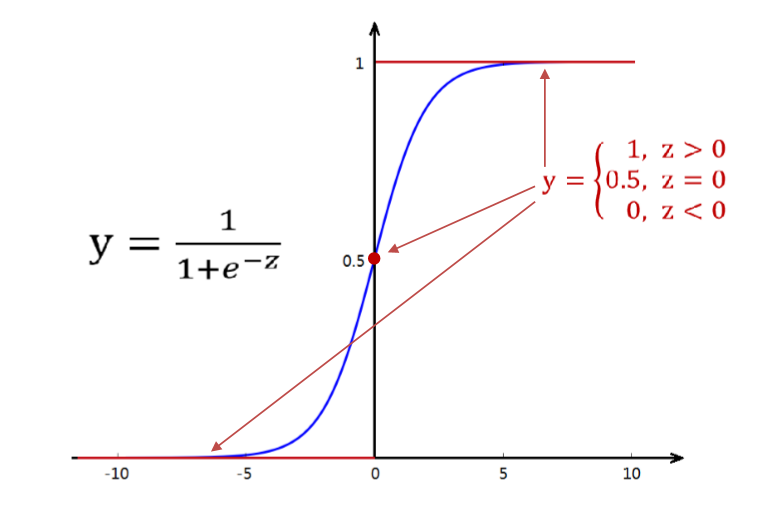

目录
对于线性回归而言，标签是连续值，线性回归的任务就是构造一个预测函数来映射输入的特征矩阵 x 和标签值 y 的关系，要构造出这个预测函数的核心就是找到参数矩阵 θ^T^，通过预测函数，可以通过输入的特征矩阵 x ，来得到连续型的预测值。
线性回归的标签是连续值，那如果标签是离散值的呢？具体点就是那种只有 0，1 两种值的呢？这个时候如果有一个函数，可以使得我们输入了一个连续值（线性回归预测出来的结果），把这个值归一化到 (0, 1) 之间，那么就可以从概率的角度来看，如果这个值大于 0.5，就把其归类到 1，如果这个值小于 0.5，就把其归类到 0。此时 Sigmoid 函数就出现了。
Sigmoid 函数：
\[
g(x) = \frac{1}{1 + e^{-z}}
\]

对于 Sigmoid 函数，在 z > 0 时，0.5 < y < 1，z -> inf ，y -> 1。
线性回归预测函数 \(z=θ^Tx\) 预测得到的连续值代入Sigmoid函数，便得到了逻辑回归模型的预测函数 \(y(x)=\frac{1}{1 + e^-z}\)
关于决策边界的一些解惑：
建模过程：找出最佳的 θ vector，来使得数据和模型的拟合程度最高，用这个θ vector来构建预测函数y(x)，然后将特征矩阵输入到预测函数来输出预测结果y。
要得到参数向量 \(θ^T=[ θ_0,θ_1,θ_2,θ_3...θ_n]\)，来最好的拟合出一个模型，就要找出这个模型的损失函数，最小化这个损失函数，来得到对应的 \(θ^T\)，那么应该如何得到这个损失函数呢？
首先要理解的一个地方是，经过 Sigmoid 函数进行归一化的数值是介于 0 到 1 之间的，那么这个值就可以看成是一个概率值，这个概率值的含义是，对于给定的一个样本 \(x_i\) 和 参数向量 \(θ^T\)，该 \(x_i\) 能被预测为 标签1 的概率，我们把这个概率用 \(y_θ(x_i)\)来表示如下：
样本 i 由特征向量 \(x_i\) 和 参数向量 θ 组成的预测函数中，样本被预测为 标签1 的概率：
\[
P_1 = P(\hat{y}|x_i,θ) = y_θ(x_i)
\]
样本 i 由特征向量 \(x_i\) 和 参数向量 θ 组成的预测函数中，样本被预测为 标签0 的概率（由于服从0-1分布）：
\[
P_0 = P(\hat{y}|x_i,θ) = 1 -y_θ(x_i)
\]
那么把这两个概率整合得到联合概率公式，可以得如下形式：
\[
P(\hat{y}|x_i,θ) = P_1^{y_i} * P_0^{1-y_i}
\]
对于一个样本 i ，当 \(y_i = 0\) 时，\(P(\hat{y}|x_i,θ) = P_0\)，此时，我们希望 \(P_0\) 越接近于 1 越好，因为这样取到 标签 0 的概率越大。当 \(y_i = 1\) 时，\(P(\hat{y}|x_i,θ) = P_1\)，此时，我们希望 \(P_1\) 越接近于 1 越好，因为这样取到 标签 1 的概率越大。所以不管怎样，我们都希望\(P(\hat{y}|x_i,θ)\) 的 取值越大越好，越接近于 1 越好，这样得到的结果更接近于预期值，即损失更小。所以我们要获取它的最大值，现在的问题，就由将模型拟合中的“最小化损失”问题，转换成了对函数求解极值的问题。
那么对数据集中的m个样本，得到的联合概率公式：
\[
\begin{align}
J(\theta) &= \prod_{i=0}^nP(\hat{y}|x_i,θ) \\
&= \prod_{i=0}^nP(P_1^{y_i} * P_0^{1-y_i}) \\
\end{align}
\]
对联合概率公式 \(J(θ)\) 两边同时取对数，在根据对数运算的公式：
\[
\begin{align}
logJ(\theta) &= log\prod_{i=0}^nP(P_1^{y_i} * P_0^{1-y_i}) \\
&= \displaystyle \sum^{m}_{i=1}logP(y_\theta(x_i)^{y_i} * (1-y_\theta(x_i))^{1-y_i}) \\
&= \displaystyle \sum^{m}_{i=1}( log(y_\theta(x_i)^{y_i} + log(1-y_\theta(x_i)^{1-y_i})\\
&= \displaystyle \sum^{m}_{i=1}( y_i*log(y_\theta(x_i) + (1-y_i)*log(1-y_\theta(x_i))\\
\end{align}
\]
因为此处时求解联合概率函数的最大值，要转化为求其最小值，只须求 \(-logJ(\theta)\) 即可，如此，便得到了逻辑回归的损失函数\(J(\theta)\)：
\[
J(θ) = -\displaystyle \sum^{m}_{i=1}(y_i * log(y_θ(x_{i}))) + (1 - y_i) * log(1 - y_θ(x_i))
\]
这个推导过程实际上就是"极大似然估计 MLE"的过程。
概率与似然：
求最大似然函数估计的一般步骤：
对于逻辑回归的最大似然函数，要求解对数似然函数可导=0，是一个NP难问题，所以步骤3，4不可行，又因为对数似然函数是一个凸函数，只会存在一个最小值，对于梯度下降法没有收敛到局部最小值烦恼，所以使用梯度下降法
逻辑回归的建模过程，就是要求解参数向量 \(\theta\) ，使得模型最好的拟合数据。而求解 \(\theta\) 的值是通过最小化损失函数得到的，这个过程使用梯度下降法。
梯度下降法，是一个基于搜索的最优化算法，用来最优化一个损失函数。
姑且来拆解这个方法中的词：
梯度下降法的求解过程：
根据上面求解梯度下降法的过程，可以得知一个重要的参数 max_iter ，控制着迭代的次数，在 sklearn 里面的 Logistic Regression 是没有步长这个参数的，这个迭代的过程仅由参数 max_iter 来控制，max_iter 过小，算法可能没收敛到最小值，max_iter 过大，算法收敛缓慢。
有一个疑问是：max_iter 过大，不会跳过了最小值点吗？
其实迭代次数多了是没问题的，因为迭代次数多了后，在到达极值点时，函数对自变量的导数已近乎为0，即使过了极值点，导数就变为正数了，此时，参数向量的值减去步长与梯度的乘积反倒变小了。所以即使步数多了，结果也基本上就在极值点处左右徘徊，几乎等于极值点。
虽然逻辑回归和线性回归是天生欠拟合的模型，但我们还是需要控制过拟合来调整模型，对逻辑回归中过拟合的控制，通过正则化来实现。
常用的正则化有 \(L_1\)正则化和\(L_2\)正则化，分别通过在损失函数后 θ 加上参数向量的L1范式和L2范式的倍数来实现。这个增加的范式成为 "正则项" 或 "惩罚项"，利用正则项来约束J(θ) 中θ的取值不至于过大，来防止过拟合。
\[
J(\theta)_{L_1} = C*J(\theta) + \displaystyle \sum^{n}_{j=1}|\theta_j|\\
J(\theta)_{L_2} = C*J(\theta) + \sqrt {\displaystyle \sum^{n}_{j=1}(\theta_j)^2}\\
\]
对应于 Lasso Regression 和 Ridge Regression 的 \(L_1\) 与 \(L_2\) 正则化
\(L_1\) 正则化 很容易把某个参数 \(\theta\) 变为 0，因为这种特性，\(L_1\) 正则化 会筛掉一些特征，可能时有用的特征也可能时没用的特征。而 \(L_2\) 正则化 只会把 \(\theta\) 变为一个很小的值而不会变为 0。一般都使用，\(L_2\) 正则化，当数据量很大的时候就使用 \(L_1\) 正则化，来筛掉一些特征。
OvO (One vs One)：用不同标签的数据，两两类别之间使用逻辑回归得到一个分类器（这个分类器用来区分这两种类别中的某一个），把要预测的样本传入到这些分类器当中，得到对应的概率，取在所有分类器对比中概率最高的作为分类结果。
OvR (One vs Rest)：取出某一类样本，和剩下的样本之间构建分类器（这个分类器是用来区分是这个样本和不是这个样本的数据），把要预测的样本传入到这些分类器当中，得到对应的概率，取在所有分类器对比中概率最高的作为分类结果。
OvO的分类时间更长，但是结果更加精准。
==控制梯度下降的迭代次数==
逻辑回归的运行受到最大迭代次数的强烈影响。
max_iter 过大，梯度下降迭代次数过多，模型运行时间缓慢。
==选择正则项，和正则化强度的系数==
| 参数 | 说明 |
|---|---|
| penalty | 可以输入"l1"或"l2"来指定使用哪一种正则化方式，不填写默认"l2"。注意，若选择"l1"正则化，参数solver仅能够使用求解方式”liblinear"和"saga“，若使用“l2”正则化，参数solver中所有的求解方式都可以使用。 |
| C | C正则化强度的倒数，必须是一个大于0的浮点数，不填写默认1.0，即默认正则项与损失函数的比值是1：1。C越小，损失函数会越小，模型对损失函数的惩罚越重，正则化的效力越强，参数会逐渐被压缩得越来越小。 |
==multi_class 表示我们要预测的分类是多分类，还是二分类的==
默认值是 'ovr'，表示当前处理的是二分类，或以"一对多"的形式处理多分类问题。
'multinomial'：表示处理多分类问题。
'auto'：表示自动选择
==求解损失函数的方式==
默认是 'liblinear' ，坐标下降法
还有'sag' 随机平均梯度下降法，其实就是Mini Batch gradient descent，小批量的梯度下降，介于梯度下降法和随机梯度下降法的择优方法。
还有 'newton-cg'，'saga'等方法可选
现实当中正负样本的比例往往很不平衡，比如100个浏览此商品的人中，只有一个人购买了此商品，剩下99个人没有购买，class_weight就是==平衡不同标签数据样本的比重，通过给少量的标签增加权重==
参数为'balanced' 和 None，默认为None
因为'balanced'参数比较难用，我们要对不平衡的样本进行采样处理，由如下方法
# 使用上采样(增加样本量少的样本的数量)的方法平衡样本
import imblearn
from imblearn.over_sampling import SMOTE
sm = SMOTE(random_state=42) #实例化 X,y = sm.fit_sample(X,y)
n_sample_ = X.shape[0]
pd.Series(y).value_counts()
n_1_sample = pd.Series(y).value_counts()[1] n_0_sample = pd.Series(y).value_counts()[0]
print('样本个数：{}; 1占{:.2%}; 0占 {:.2%}'.format(n_sample_,n_1_sample/n_sample_,n_0_sample/n_sample_))逻辑回归的优点
1.LR能以概率的形式输出结果，而非只是0,1判定
2.对线性关系的拟合效果好，LR的可解释性强，可控度高
3.训练快，特征工程(featureengineering)之后效果赞
4.因为结果是概率，可以做排序模型
5.添加特征方便
6.在小型数据上 抗噪不错
出现的应用场景
1.CTR预估/推荐系统的learningtorank/各种分类场景
2.很多搜索引擎厂的广告CTR预估基线版是LR
3.电商搜索排序/广告CTR预估基线版是LR
4.新闻app的推荐和排序基线也是LR
Sigmoid函数：把线性回归得到的直线或者曲线变成决策边界
为什么把线性回归的值带入Sigmoid函数就可以变成决策边界？
假设Sigmoid(z) ，z就是线性回归的表达式，在sigmoid函数中自变量是z，z分为>0和<0。z=0就是指决策边界，z>0就是二元分类中的某一类，z<0就是二元分类中的另一类。
关于坐标系：
使用梯度下降获取损失函数的最小值的时候，纵坐标是J(θ)，所有横坐标是[x1, x2, x3···]
进行分类时，即观看分类结果，观看决策边界时，所有的维度都是x1, x2, x3···xn
对于 n 维的数据，决策边界就是 n-1 维的超平面
决策边界就是令Sigmoid函数等于0的那个地方，决策边界的呈现是对于特征向量来呈现的，即如果有两个特征x1, x2，那么横坐标和纵坐标分别为x1, x2，然后画出决策边界就是，令
Sigmoid(x1)=0画出x2的值。
# 画出决策边界
def plotData(data, label_x, label_y, label_pos, label_neg, axes=None):
# 获得正负样本的下标(即哪些是正样本，哪些是负样本)
neg = data[:,2] == 0
pos = data[:,2] == 1
if axes == None:
axes = plt.gca()
axes.scatter(data[pos][:,0], data[pos][:,1], marker='+', c='k', s=60, linewidth=2, label=label_pos)
axes.scatter(data[neg][:,0], data[neg][:,1], c='y', s=60, label=label_neg)
axes.set_xlabel(label_x)
axes.set_ylabel(label_y)
axes.legend(frameon= True, fancybox = True)
# 画出决策边界 二维
plt.scatter(45, 85, s=60, c='r', marker='v', label='(45, 85)')
plotData(data, 'Exam 1 score', 'Exam 2 score', 'Admitted', 'Not admitted')
x1_min, x1_max = X[:,1].min(), X[:,1].max(),
x2_min, x2_max = X[:,2].min(), X[:,2].max(),
xx1, xx2 = np.meshgrid(np.linspace(x1_min, x1_max), np.linspace(x2_min, x2_max))
h = sigmoid(np.c_[np.ones((xx1.ravel().shape[0],1)), xx1.ravel(), xx2.ravel()].dot(res.x))
h = h.reshape(xx1.shape)
plt.contour(xx1, xx2, h, [0.5], linewidths=1, colors='b')陆续补充~~